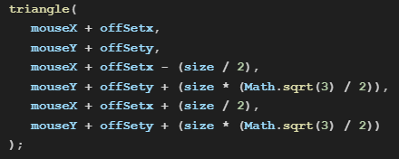

Favorite ASC Moments
Unity Projects
LinkedIn
Click the links below!
1) Moment Musical by Schubert
2) Unity Projects Showcase & Demo
3) Unity Endless Runner Demo
4) The Great Southern Trendkill (Album) by Pantera
(Exception) 5) Using Trigonometry to draw a triangle in p5.js
